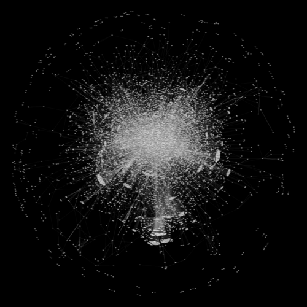

on
Uncovering Emergent Collaboration Through Community Sensemaking - Part 2
Learning from Adoption Failure and Success
In my previous post, I introduced a central question organizations ask after the deployment of a new social collaboration platform: What business value is the platform delivering for our organization?

Let’s take a moment to reflect on factors that affect the resulting business value. Without question, general usability will have a significant impact. If the savviest users cannot accomplish their work in a more efficient manner, the platform has little hope of offering additional value. Users must ultimately discover how best to map their work into the platform to realize efficiency gains. If the cost of achieving this proficiency is high, adoption will likely suffer, especially in highly collaborative work environments.
Providing the community manager with better tools to monitor the evolution of adoption across the organization creates opportunities to accelerate the learning process. In areas of the organization where adoption is lagging expectations, the community manager can investigate offline to better understand what sources of friction may be inhibiting adoption. Is there a fundamental limitation in the platform stymying success? Might additional tailored training for a specific use case be necessary? Areas with lagging adoption provide opportunities to uncover issues, craft potential remedies and assess their impact. As groups within the organization identify effective workflows that meet their particular needs, we expect to see more substantive collaboration among group members. If we can detect such collaboration behavior, the community manager can leverage those discoveries in multiple ways.
One of the most valuable benefits is the opportunity to enhance knowledge sharing. Process discoveries made by one group can be shared with others facing similar challenges. By accelerating the identification and dissemination of platform best practices, the organization as a whole can benefit more rapidly from community innovators.
Similarly, if emergent collaboration can be detected as an event is unfolding, the community manager can perform targeted interventions during the event in an attempt to magnify positive outcomes. This may include spreading awareness of an event at key moments or contributing information to shape an ongoing conversation. By increasing the pace at which the community manager can sense the environment, understand the implications and respond, new opportunities are created to experiment and observe the outcomes of those actions. What the community manager witnesses online might spur them into action both online and offline in order to foster additional benefits online.
Representing Interaction Activity
Now that we’ve defined the possibilities at a qualitative level for impacting organizational effectiveness, we are ready to consider how one might uncover potential collaboration success stories from data. The first question to consider is: what data is available? In the context of Jive, every atomic action a user takes within the platform is logged in some manner. Given our interest in collaboration activity, I built a processing pipeline to construct a record of all user interaction events from a specified Jive instance. Every interaction event actually consists of two events: a creation event and a response event. The creation event data for a particular interaction describes the created artifact that engendered a response. The response event data describes the artifact that represents a public response to the created artifact. The interaction event data in total captures properties such as the users involved in both creation and response, the types of artifacts created and the times at which the creation and response events occured.
Within this data, we are searching for groups of users engaged in substantive collaboration over some time interval. As a starting point, let us assume the time interval of interest is given. One approach is to construct a graph representation of the interaction activity and search for clusters within the resulting graph. If we were to represent the interaction activity at the highest fidelity, we would be operating on a directed, multi-relational (hyper)graph. We will opt instead to operate on an aggregated form of the multi-relational graph. In addition to aggregating over time, we will aggregate interaction events across a set of (creation,response)-type pairs. The set of (creation,response)-type pairs defined as substantive collaboration specifies the interaction class. Creation activities included in our work are document, blogpost, thread message and comment creation. Response activities included are thread message and comment responses. Only interactions within this class will be included in the aggregated interaction graph. Directed hyperedges will be represented by the corresponding set of directed edges capturing all pairwise interactions.
The aggregated interaction graph below represents all substantive interaction within the Jive community for a large multinational organization over a 90 day period. Each node in the graph represents a single user. Directed edges connect users who have interacted somewhere in the community. The direction of the edges is in the response direction. Each graph edge is weighted by the number of the interactions with that direction over the time period. Over 85,000 users are represented in this graph. In the next post, we’ll consider ways to dissect this representation so that we can identify promising areas in the community warranting further investigation.

Joint work with Diiv Ramalingam - UC Berkeley